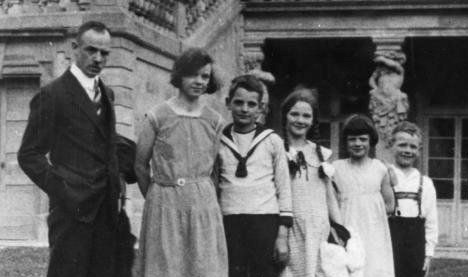
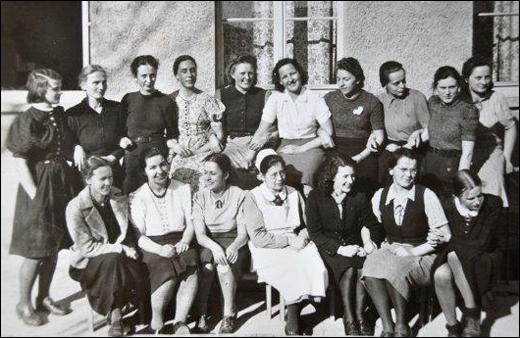
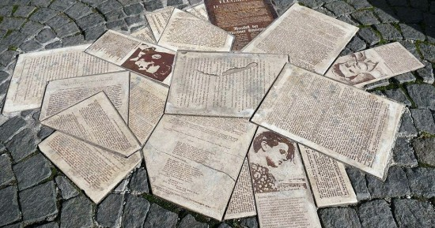

|
Resources: http://www.holocaustresearchproject.org/revolt/scholl.htmlhttps://www.jewishvirtuallibrary.org/the-white-rose-a-lesson-in-dissent https://timeline.com/sophie-scholl-white-rose-guillotine-6b3901042c98 https://spartacus-educational.com/GERschollS.htm http://ww2gravestone.com/people/scholl-hans-fritz-and-sophie-magdalena/ https://www.goodreads.com/book/show/2877724-fritz-hartnagel https://m.youtube.com/watch?v=baRvF6ZBK18 |
|
Mai 1921Ich bin am 9. Mai 1921 geboren. Mein Vater ist Robert Scholl und meine Mutter ist Magdalena. Ich habe drei Schwestern, Inge, Elisabeth, und Thilde, und zwei Brüder, Hans und Werner. |
 |
|  | 1933Ich trete dem Bund Deutscher Mädel bei. Meine jüdischen Freunde können nicht mitmachen und ich verstehe das nicht. Vater mag das BDM und Hitler nicht. Ich mag Gedichte von Heinrich Heine, aber das BDM mag sie nicht. |
1940Ich werde Kindergärtnerin. Ich habe Interesse an der Politik. Ich schreibe gern meinem Freund über Politik. Mein Freund Fritz Hartnagel ist Soldat in der deutschen Armee. |
|
|  | 1942Ich gehe an die Universität München. Ich studiere Biologie und Philosophie. Ich trete der Weiβen Rose mit meinem Bruder Hans bei. Ich schreibe Flugblätter mit meinem Bruder und anderen Studenten. Wir verteilen Flugblätter für die Weiβe Rose. |
Februar 1943Mein Bruder und Ich verteilen sie an der Universität München. Wir werden erwischt. Wir werden zum Tode verurteilt. |